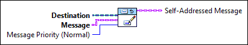

Owning Palette: Advanced VIs (Actor Framework)
Requires: Base Development System
(Filename: Actor Framework.lvlib:Self-Addressed Msg.lvclass:Address Message.vi)
Creates a self-addressed message by storing an enqueuer inside a message. Later, when you send the message with the Send Self-Addressed Message method, the message will be sent to the actor that uses this enqueuer.
